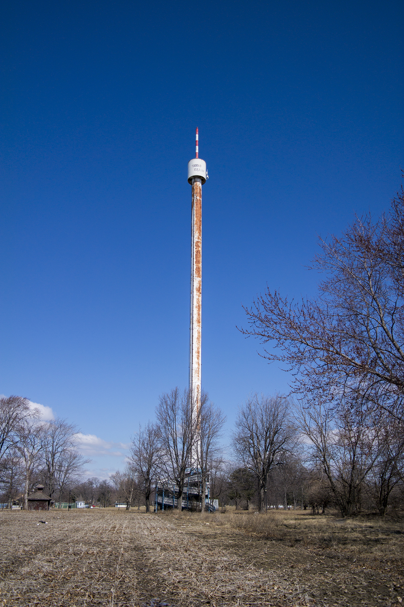

About
I am an environmental historian of North America. My interest in Great Lakes borderlands came via a graduate degree in urban design for which I first moved to Michigan. In the years since, I have continued to live in and research borderlands. I am broadly interested in how infrastucture creation reveals the myriad social and political tensions that undergird our understanding of borders and nations. My writing on these subjects have appeared in publications from Contingent Magazine to Water History as well as websites such as the Network in Canadian History & Environment
